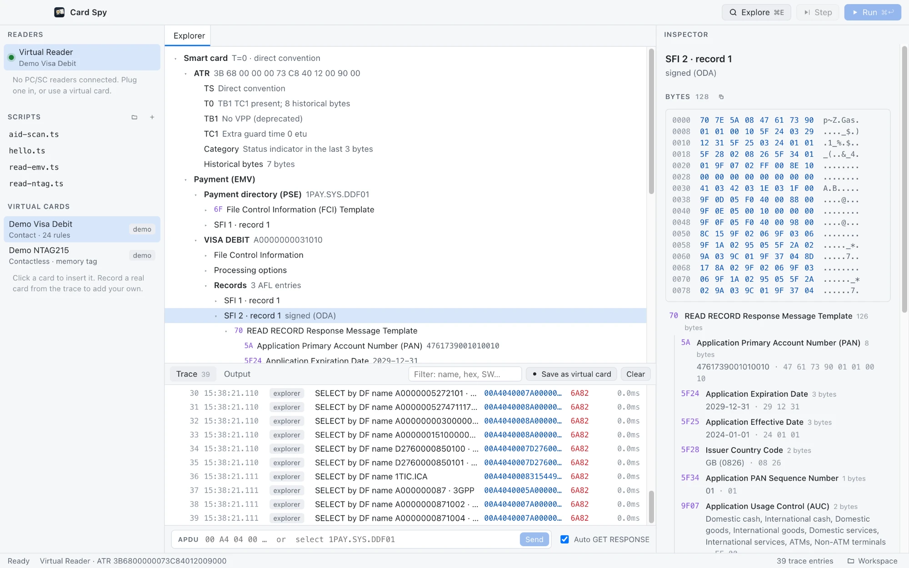
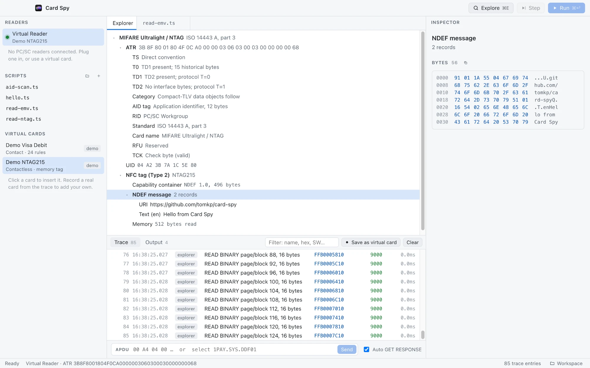
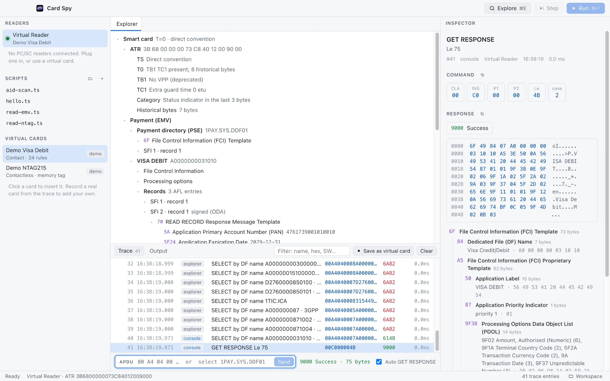
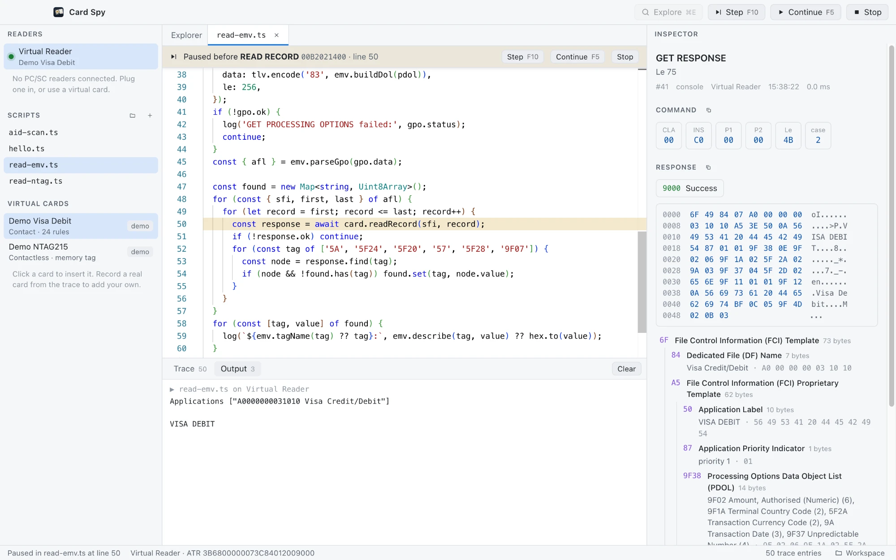

A smartcard and NFC IDE
Explore what's on a card, read every APDU decoded, script and step through sessions, and keep working without a reader using virtual cards.

Card explorer
See everything a card will tell you
One click reads what Card Spy understands. That means the ATR byte by byte, payment applications with their records, counters and transaction log, and NFC tag memory with its NDEF records. It also scans for well-known applications such as PIV, OpenPGP and FIDO.
Every value is named and decoded: dates, currencies, countries, flags and CVM rules, and ISO 7816-4 file control parameters for non-payment cards.

APDU workbench
Every exchange, decoded
Type an APDU in hex, or a shortcut such as select 1PAY.SYS.DDF01, and see the
answer at once. The trace keeps every command from the console, the explorer and your
scripts. The inspector lays out the header, explains the status word and decodes the
response as TLV, highlighting each object's bytes in the hex dump.
T=0 cards just work: 61xx and 6Cxx are followed up automatically,
and every step appears in the trace.

Scripts
Script it, then step through it
Write TypeScript against a small card API, with completions as you type. Run it against any reader, or press F10 to pause before each APDU, with the line highlighted and the command named.
const fci = (await card.select('A0000000031010')).expectOk();
log(fci.tlv());
Virtual cards
Record any session with a real card and replay it later without the card. Virtual cards are plain JSON you can edit and keep in git. Demo cards are built in.
Contact and contactless
Any PC/SC reader works, including contact readers and NFC readers such as the ACR122U. Contactless memory tags (NTAG, Ultralight) are read through the reader's own commands.
Made for card work
EMV and ISO 7816 dictionaries, NDEF decoding, a known-AID library, and Java Card status words. If a card refuses a command, Card Spy tells you why where it can.
Download
Building from source: git clone https://github.com/tomkp/card-spy, then
npm install and npm run dev. See the
README.